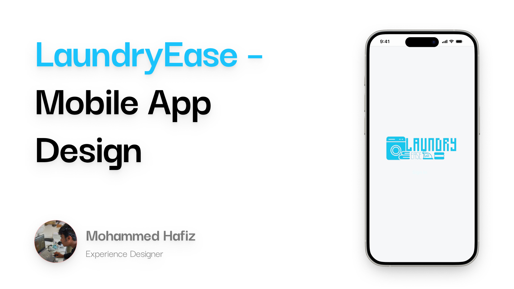
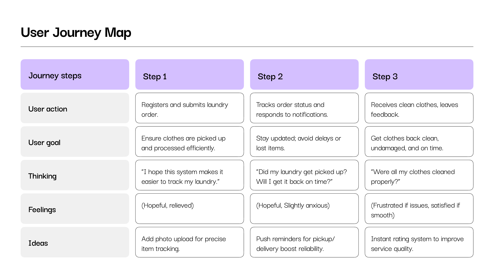
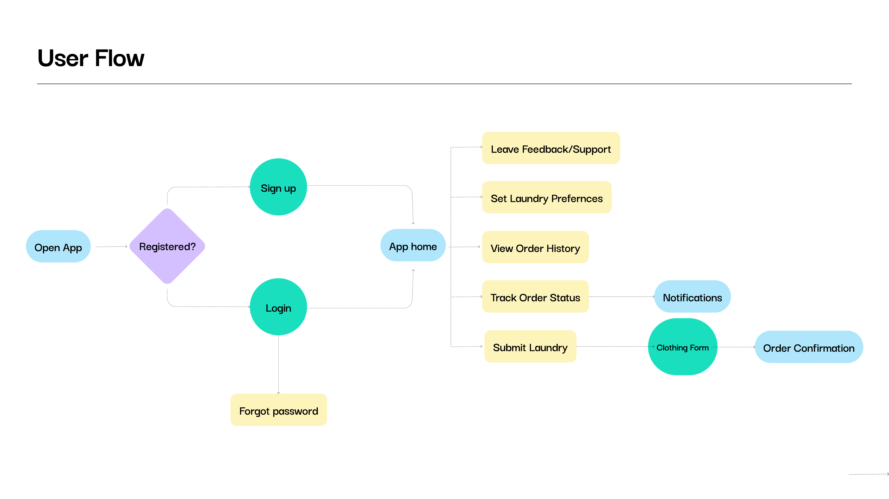
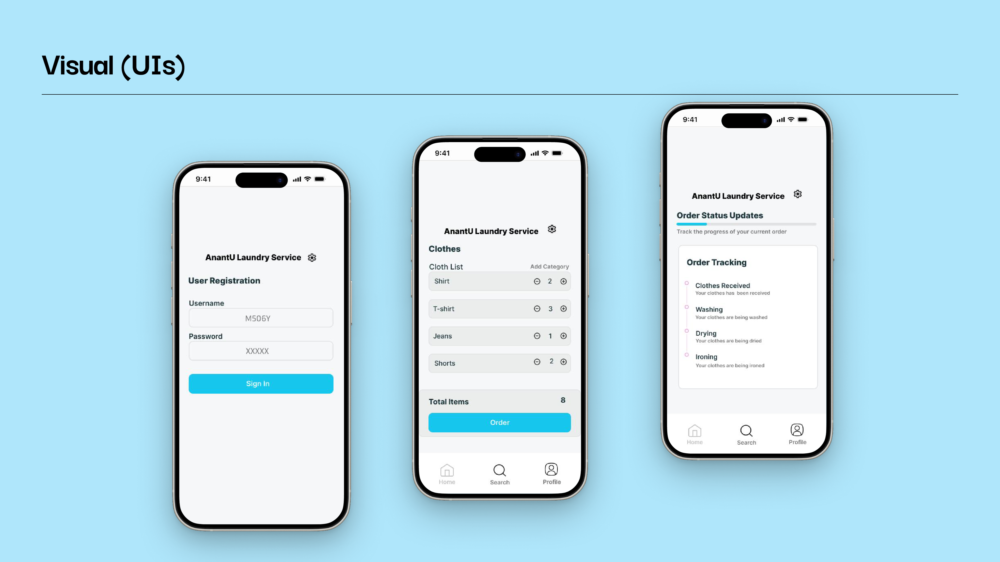
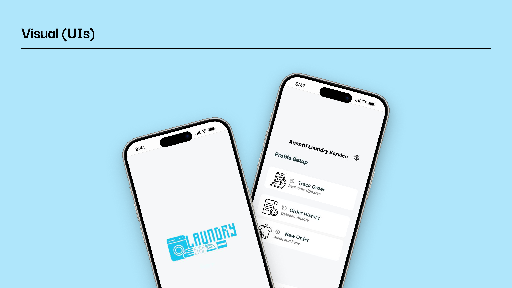

Laundry Ease
A service and system design project for university hostel laundry.

PROJECT DETAILS
Type: Service & System Design (Mobile App)
Role: UX Research, Service Design, Visual Design, Prototyping & Testing
Team: Solo
Duration: 3 Weeks
Laundry Ease isn't really an app problem, it's a trust problem. Students hand their clothes to a service they can't see or control for days at a time. This project designs the system around that handoff, mandatory submission records, order tracking, notifications, and a feedback loop, with the mobile app as the one visible touchpoint into all of it.
PROBLEM
Students living in university hostels struggle to manage their laundry due to busy schedules, limited access to laundry facilities, and inconsistent service quality. This leads to lost or damaged clothes, delays, and extra stress.
The issue lives in the hostel environment itself: limited time and resources mean laundry logistics compete directly with academic focus, creating a need for a more reliable and efficient system, not just a nicer screen.
SOLUTION
A managed laundry service system, not just a booking app. Every order starts with a mandatory clothing submission form and a photo inventory, so both sides have a record of what went in. From there, real-time order tracking, push notifications, and a feedback rating after every cycle hold the service accountable from drop-off to return.
CHALLENGES & THE SYSTEM BUILT TO SOLVE THEM
Timely returns Order tracking and notifications keep every order visible instead of a black box.
Lost or damaged items A mandatory clothing submission form with an itemized, photographed inventory gives both sides a record before anything changes hands.
Cleaning quality & wrinkling Feedback and rating after every cycle, plus clear order instructions, turns quality into something measured instead of assumed.
Reliability Reminders, order history, and transparent tracking replace "I hope this gets done" with a system that shows its work.
Ease of use All of the above stays invisible until it's needed: a simple mobile app is the one front door into the whole system.
DESIGN PROCESS — 3 WEEKS
User Research
Priya Shah, 21
Juggles busy class schedules, social activities, and academic responsibilities. With no personal laundry facility, she relies on the hostel's laundry service to save time and stay focused on studying.
"I wish laundry was one less thing to worry about. Getting my clothes back on time and in good condition would make my hostel life so much easier!"
Needs
- Get laundry done without sacrificing study time
- Clothes returned clean, undamaged, and on schedule
Frustrations
- Delays in getting clothes back
- Clothes lost or damaged during service
- Anxiety about missing items, on top of academic stress
Empathy Map
"I never get my clothes back on time." "Some of my clothes came back damaged or missing."
"Will my clothes get lost this time?" "This whole process should be easier and more reliable."
Frustrated by delays and mixed reliability. Worried about losing clothes or getting them back in poor condition.
Frequently checks laundry status or asks for updates. Tries to keep track of items sent in every order.
COMPETITIVE ANALYSIS
Benchmarked LaundryEase against three comparable hostel/campus laundry services, SpeedyWash, UClean, and Fabrico, across the four features most directly tied to the trust problem this project set out to solve: order tracking, order submission, push notifications, and user feedback & rating.
USER JOURNEY MAP

Registers and submits laundry order. "I hope this system makes it easier to track my laundry." (Hopeful, relieved)
Tracks order status and responds to notifications. "Did my laundry get picked up? Will I get it back on time?" (Hopeful, slightly anxious)
Receives clean clothes, leaves feedback. "Were all my clothes cleaned properly?" (Frustrated if issues, satisfied if smooth)
User Flow & Wireframes
Information Architecture & User Flow

HI-FI WIREFRAMES

Style Guide
Typography Sizes
Inter
Color Palette
Final UI Design

REFLECTION
"This project pushed the idea that trust in a laundry service isn't a UI problem, it's a systems problem. Tracking, accountability, and feedback loops do more work than any screen. The app is just where those systems become visible."